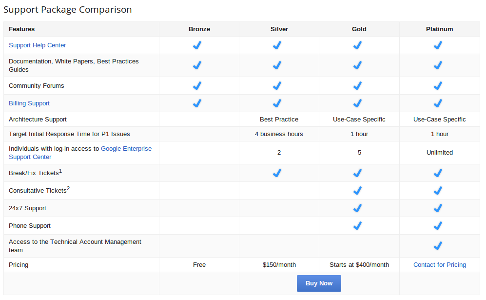

source ./env.shPWD=`pwd`
APPENGINE=$PWD/go_appengine
VENDOR=$PWD/.vendor
export GOROOT=$APPENGINE/goroot
export GOPATH=$VENDOR:$PWD
export PATH=$APPENGINE:$PWD/bin:$VENDOR/bin:$PATHdeps:
gpm install -g "$(CURDIR)/$(APPENGINE)/goapp" -u 0
# build binaries as necessary.
goapp install github.com/smartystreets/goconvey
goapp install github.com/clipperhouse/genclean-deps:
rm -rf $(VENDOR_GOPATH)
mkdir $(VENDOR_GOPATH)
rm -rf pkgdownload-local-data:
mkdir -p ./data
appcfg.py download_data --url=$(LOCAL_REMOTE) --filename=./data/foo.data --kind=Foo --batch_size=50upload-prod-data:
appcfg.py upload_data --url=$(PROD_REMOTE) --filename=./data/foo.data --kind=Foo --batch_size=50func MyHandler(w http.ResponseWriter, r *http.Request) {
ctx := appengine.NewContext(r)
//do other things
}-gobin optiongoapp testfunc TestPutFoo(t *testing.T) {
ctx := test.CreateContext()
defer ctx.Close()
Convey("When you have a Foo", t, func() {
f := NewFoo()
So(f.Name, ShouldEqual, "Bar")
Convey("you can store it", func() {
key, err := PutFoo(ctx, &f)
So(err, ShouldBeNil)
Convey("and retrieved it", func() {
reget := &Foo{Id: f.Id}
err := datastore.Get(ctx, key, reget)
So(err, ShouldBeNil)
So(reget, ShouldResemble, &f)
})
})
})
}Only works in local development
record := Bar{"foo"}
key, err := datastore.Put(ctx, key, &record)
datastore.Get(ctx, key, &Bar{})func CreateContext() aetest.Context {
opts := aetest.Options{AppID: fmt.Sprintf("unit-test-%v", os.Getpid())}
ctx, err := aetest.NewContext(&opts)
if err != nil {
panic(err.Error())
}
return ctx
}Production:
ctx := appengine.NewContext(r)Test:
ctx := aetest.NewContext(nil)func MyHandler(w http.ResponseWriter, r *http.Request) {
ctx := appengine.NewContext(r)
//do other things
}
func TestHandlet(t *testingT) {
res := httptest.NewRecorder()
req := http.NewRequest("GET", "/", nil)
MyHandler(res, req)
}PANIC!!! appengine: NewContext passed an unknown http.Request in api_dev.go
Make all Handlers accept an appengine.Context
func MyHandler(ctx appengine.Context, w http.ResponseWriter, r *http.Request) {
//do things
}func (f ContextHandler) ServeHTTP(w http.ResponseWriter, r *http.Request) {
c := appengine.NewContext(r)
f.Real(c, w, r)
}func ContextHanderToHttpHandler(f ContextHandlerFunc) HandlerFunc {
return func(w http.ResponseWriter, r *http.Request) {
ctx := appengine.NewContext(r)
f(ctx, w, r)
}
}http://www.compoundtheory.com/testing-go-http-handlers-in-google-app-engine-with-mux-and-higher-order-functions/
func myHandler(w http.ResponseWriter, r *http.Request) {
c := appengine.NewContext(r)
// ...
// regular request handling
// ...
// Save to memcache, but only wait up to 3ms.
done := make(chan bool, 1) // NB: buffered
go func() {
memcache.Set(c, &memcache.Item{
Key: key,
Value: data,
})
done <- true
}()
select {
case <-done:
case <-time.After(3 * time.Millisecond):
}
}High Performance Apps with Go on App Engine http://www.youtube.com/watch?v=fc25ihfXhbg
An autocaching interface to the app engine datastore for Go. Designed to be similar to the python NDB package.
https://github.com/mjibson/goon
func migrate(w http.ResponseWriter, r *http.Request) {
ctx := appengine.NewContext(r)
q := datastore.NewQuery("Foo")
cursor, err := q.Run(ctx).Cursor()
f := delay.Func("process", process)
f.Call(ctx, cursor.String())
}func process(ctx appengine.Context, c string) error {
g := goon.FromContext(ctx)
q := datastore.NewQuery("Foo")
cursor, err := datastore.DecodeCursor(c)
keepGoing := true
iter := g.Run(q.Start(cursor))
batch := []Foo{}
for i := 0; i < BATCH_SIZE; i++ {
z := Foo{}
if _, err := iter.Next(&z); err != nil {
if err == datastore.Done {
keepGoing = false; break
}
}
z.Name == "John"
batch = append(batch, z)
}
g.PutMulti(batch)
if keepGoing {
f := delay.Func("process", process)
f.Call(ctx, iter.Cursor().String())
}
return nil
}